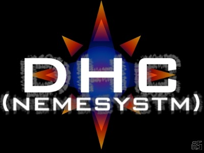

[DHC]
Get that hand out of my pants, I'm counting till a 1000.
(nemesystm)
ICQ#55155478
Admin: mail me and I'll tell you what's wrong

TELETUBBIES.
We watch the TV and think it's fake,
a world of splendor,
full of wealth,
and all people are in good health,
A utopia for all to be seen
through a transparent screen.
we think we are real.
Someone's watching us though.
We think we rule the world.
But like we kill fly's,
they can kill us with a blink of their eyes.
We have no respect for we don't seem them.
some call em gods,
depicted with electric rods.
Some call them "rulers",
guides.
But we are just entertainment,
for the powers above
we are adorable and create a feeling of love.
Long live the teletubbies,
because we're the humantubbies.
And as soon as they came extinct,
we will too.
Firefly